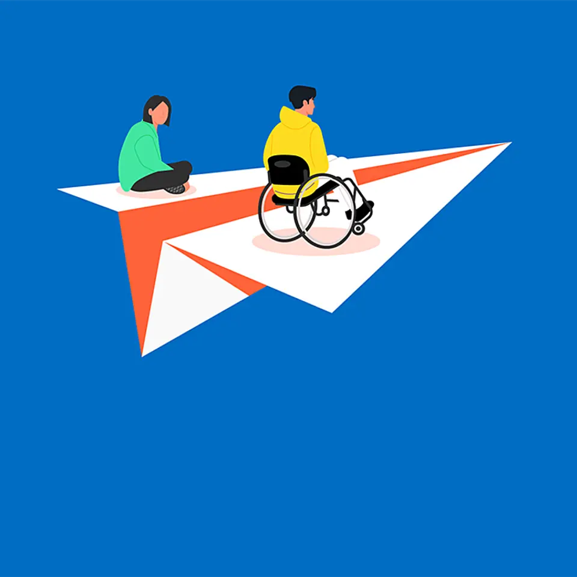

【新潮流】いま、AIコーディングは「第2章」に入った
発行日時：2026-11-11 05:30:03 JST
NewsPicks原文を読む
あなたに関係ありそうな理由
AIを試すだけでなく、社内の開発・保守へ広げる際の安全設計と役割分担を考える材料になります。
概要
NewsPicks編集部は、自然言語でウェブやスマートフォンのアプリを作るReplitの共同創業者兼デザイン責任者、ハヤ・オデー氏に取材した。Replitは2016年創業で、2024年9月にAI開発エージェントを投入。記事は利用者が6000万人を超え、今年3月の資金調達後に企業価値が3倍になったと紹介する。個人が試作品を作る段階から、企業のチームが本番業務で使う段階へ移る変化を「第2章」と位置づけている。
企業利用では、作る速さだけでなく、公開前後の管理が課題になる。Replitは公開前に既定のセキュリティスキャンを行い、公開後もアプリを監視して脆弱性の修正につなげる仕組みを説明している。顧客のクラウド環境を使うBYOCにも対応し、データや運用の置き場所を選べるようにする。生成したコードを誰が確認し、問題が起きたときに誰が直すのか。導入企業側の保守責任は残る。
取材では、非技術職の社員にも開発を開くことと、統制を保つことの両立が焦点になる。記事が紹介するSMFLの事例では、従来6人で約6か月かかっていた作業を、1人が約1週間で終えたという。これは個別の導入事例で、どの職場でも同じ効果が出ると示すものではない。業務を理解した人が自分で試作できる一方、扱うデータや利用権限の設計を誤れば、便利さが新たなリスクにつながる。
オデー氏は、デザイナーが画面を作るだけでなく、利用者の課題設定から開発に関わる姿を描く。会話で指示する方法と、キャンバス上で形を調整する方法を組み合わせ、コードに慣れていない人も作り手になれるようにするという。AIがコードを出力するだけで、要件の曖昧さや現場とのずれが消えるわけではない。誰のどんな手間を減らすのかを先に定め、人が確認すべき工程を残すことが導入の前提になる。
NewsPicksの表示コメントでは、個人制作から企業利用への移行や、脆弱性の自動発見・修正に期待する声が出ていた。一方、保守を誰が担うのか、ガバナンスをどう設けるのかも論点になっている。記事の主張とコメントの意見は分けて読む必要がある。今後は、企業向け機能が実際の開発手順にどう組み込まれ、公開後の監視や修正がどこまで機能するかが注目点だ。
仕事や会話で使える一言
「何を作れるか」と同じくらい、「公開後に誰が安全を保つか」を先に決めたいですね。
【新潮流】街中に、「新しい乗り物」が増えている
発行日時：2026-11-11 05:30:00 JST
NewsPicks原文を読む
あなたに関係ありそうな理由
近距離移動の新しい需要を、購入者の使い方、費用、法制度、安全面から具体的に考えられます。
概要
NewsPicks編集部は、小型EVの輸入販売店ビークルファンを取材し、屋根とドアが付いた電動三輪車の利用が広がる背景を追った。販売店の売上は前年の約1億5000万円から、今年は3億円を超える見込みだという。購入者には都内の主婦が多く、子どもの送迎や買い物など、少人数で近距離を移動する用途が中心。自転車より天候に左右されにくく、軽自動車より小回りが利く乗り物として紹介される。
記事では、取材対象者が購入から8か月で約4000キロ走った例を紹介する。走行費用の試算は、ガソリンの軽自動車が1キロ約7〜8円、電動三輪車が約1.4円。これは記事内の条件による比較で、車両価格や充電環境、保険、整備費まで含む総費用の比較ではない。毎日の送迎など決まった短距離を走る人には、燃料費の差に加えて、駐車や乗降のしやすさも選択理由になる。
供給面では、中国で発達した低速電動車の市場や部品網が背景にある。記事は、電池価格が2010年から2025年に世界平均で93％下がり、2025年の中国では1キロワット時あたり84ドルだったというBloombergNEFの数字を紹介する。電池の値下がりは小型EVの価格を下げる要因だが、車両の品質や耐久性を一律に保証するものではない。輸入車を地域の移動手段として使うには、供給と修理体制も問われる。
制度上の扱いも課題だ。記事の車両は、ドアを容易に外せる荷物として扱う実務上の解釈を用い、「側車付軽二輪」として登録する。既存の区分に当てはめた運用で、安全基準や事故時の扱いが十分かという議論が残る。ミニカーは1人乗りが原則で、警察庁の検討会では2人乗りをどう扱うかも議題になっている。便利さを広げる制度整備と、歩行者や同乗者を守る基準を同時に考える必要がある。
表示コメントでは、欧州のシトロエンAmiとの比較や、購入者層の意外さに注目する声があった。専門家は移動の自由度を評価する一方、中国都市部で安全・交通秩序の問題から走行が制限された例を挙げ、法整備を促している。コメントの評価は記事の取材事実と区別したい。今後の焦点は、利用者が増えた際の事故統計、保険や修理の仕組み、そして2人乗りを含むルールづくりだ。
仕事や会話で使える一言
「便利そう」で終わらせず、誰がどの道を走り、事故時の安全をどう担保するのかを確かめたいですね。
【香川】県VS市民「体育館の解体」をめぐる攻防戦
発行日時：2026-11-11 05:30:02 JST
NewsPicks原文を読む
あなたに関係ありそうな理由
公共施設を残すか解体するかを、耐震性、費用、活用主体、手続きの観点から考える事例です。
概要
香川県立体育館は、建築家の丹下健三が1964年に設計した建物で、外観が船を思わせることから「船の体育館」と呼ばれる。2014年に閉館し、老朽化と耐震性を理由に県は解体を決めた。旧耐震基準で建てられ、2012年の耐震診断を踏まえた判断だと説明する。県は約10億円を解体費用として計上した。建築文化の価値を残したい市民・専門家と、安全や維持費を重視する県の対立が続いている。
解体工事は2026年4月に始まったが、住民訴訟を受けて9月に一時中断した。高松地裁が選んだ建築の専門家5人による調査の後、県は10月に工事を再開した。県は適切な基準で診断し、安全を確保したうえで進めていると説明する。また、閉館前の改修計画は入札が3回不調に終わり、実施に至らなかったという。手続きが適法かだけでなく、改修と解体を同じ条件で比べたかも争点になっている。
保存を求める再生委員会は、耐震診断は建物を改修して使うことを前提にしたものだと主張する。委員会が示した民間ホテル案は、初期投資は耐震改修費約6億〜10億円を含めて約30億〜60億円で、約12年で回収できるとの見込みを掲げた。これは事業提案者側の試算で、資金調達や運営が確定したことを意味しない。建物を残す場合、費用だけでなく継続的に使う主体を具体化する必要がある。
県はホテル案について、活用する事業者や安全計画の具体性が足りないと回答している。記事は、伊賀市の旧上野市庁舎を官民連携で再生した例にも触れ、保存後の用途と担い手を早い段階で結びつける大切さを示す。成功例をそのまま移せるわけではなく、建物の状態や需要、改修後の収支は個別に調べる必要がある。行政が民間提案をどう審査し、何をもって実現可能と判断するかも問われる。
表示コメントでは、診断が改修を想定していたのか、改修と解体を同じ条件で比較したのかという確認点が挙がった。ほかに、文化財としての価値、観光への波及、安全性、運営責任をめぐる意見がある。これらは読者の評価で、県の説明や委員会の主張とは区別して整理したい。今後は裁判所の判断に加え、解体後に地域が失うものと、保存案の費用・担い手がどこまで具体化するかが焦点になる。
仕事や会話で使える一言
保存か解体かの二択にせず、改修費と運営主体を含めた実行可能な案を比べたいですね。
【提言】「障害者雇用ビジネス頼み」はいずれ終わりを迎える
発行日時：2026-11-11 05:30:01 JST
NewsPicks原文を読む

あなたに関係ありそうな理由
法定雇用率の達成だけでなく、採用後の業務設計や職場参加をどう支えるかを考える材料になります。
概要
記事は、障害者雇用を企業の法定率達成だけで評価せず、本人が職場で役割を持てるかという観点から扱う。2025年に民間企業で働く障害者は70万人を超えた。法定雇用率2.5％を達成した企業は46％で、2026年7月には雇用率が2.7％へ上がる予定だ。採用数を増やす圧力が高まる一方、業務の切り出しや研修、合理的配慮を整えないと、雇用を継続するのは難しい。
広がっているのが、農園やサテライトオフィスを用意する外部の「障害者雇用ビジネス」だ。企業は働く場所や支援を事業者から提供され、雇用を進めやすくなる。記事は、雇用管理を外部に任せきりにすることや、収穫物が事業収益に結びつかず無償配布される例への批判を紹介する。こうした指摘はサービス全体を否定するものではないが、雇用先での仕事と会社の事業がどう結びつくかを確認する必要がある。
厚生労働省が把握した利用企業は、2023年3月末の1081社から、2025年10月末には1802社へ増えた。労働政策審議会では、事業者の届出義務などの規制が検討されている。記事で意見を述べる影山摩子弥氏は、規制を設けるだけではなく、現在働いている人や事業者の移行を支える措置も必要だと話す。制度の変更が就労者の仕事や生活を途切れさせないよう、実施までの移行期間も論点となる。
影山氏は、雇用率を上げることに加え、採用、業務の切り分け、研修、職場環境を一体で支える仕組みを提案する。記事は、小規模企業の調査で従業員の10〜20％ほどを障害者として雇う企業があったことや、製造現場の整理・安全改善が全体の効率化につながった例を紹介する。特定の企業事例であり、すべての職場に同じ方法が合うとは限らない。本人の強みと現場の仕事を結ぶ設計が重要になる。
NewsPicksの表示コメントには、業務を分解して本人が主体的に貢献できた経験や、雇用率と職場の多様性・安全をめぐる意見があった。記事の統計や取材対象者の提案と、読者の経験・評価は区別して読む。今後は外部事業者の規制内容に加えて、企業が採用後の仕事をどう作り、支援する人や本人の声をどう職場運営に反映するかを追いたい。現場での定着を重視する。
仕事や会話で使える一言
雇用率の数字と合わせて、本人がどんな仕事を担い、チームにどう参加しているかを見たいですね。
孤独を感じているのに「友達を切る」若者たち
発行日時：2026-11-11 05:20:00 JST
NewsPicks原文を読む
あなたに関係ありそうな理由
孤独を個人の性格で説明せず、若者の調査、セルフケアの流行、相互支援の変化から考えられます。
概要
NewsPicks配信のLongBlackは、韓国の社会学研究者イ・スンヨン氏に、孤独を感じながら友人関係を断つ若者について聞いた。記事が紹介する2024年の韓国調査では、25〜39歳の70％が孤独を感じると回答。英国の2025年調査では16〜29歳が最も孤独を感じやすい層だった。国や調査方法の異なる数字を単純比較はできないが、若年層の孤独が複数の社会で課題になっていると示す。
イ氏は2022年、うつ病の治療経験がある20代女性17人に聞き取りを行い、全員に本音を話せる人がいないという共通点を見いだした。対象が小規模で、若者全体を代表する調査ではない。それでも、身近な人がいることと、弱さを見せて助けを求められる相手がいることは同じではないと考える手掛かりになる。記事は、関係を断つ選択が自分を守る一方で、支援を得る機会を減らす可能性を取り上げる。
「縁切り社会」というイ氏の見方は、関係を効率で評価し、負担を感じる相手を遠ざける動きへの問題提起だ。セルフケアや境界線を引くこと自体を否定するのではなく、苦しい関係から距離を取る自由と、摩擦を避けて相互扶助まで手放すことを区別しようとしている。著書は2026年4月刊で、5か月で1万部を超え、24週連続でベストセラー入りしたと記事は紹介する。これは本の販売実績で、研究の正しさを証明するものではない。
韓国の調査機関の集計では、ウェルネス関連の言葉のオンライン言及が2023年の約5万4000件から、2025年には約13万6000件へ増えた。記事は、マッキンゼーの2025年調査に出てくる「Maximalist Optimizer」という消費者像にも触れ、心身を最適化しようとする文化を考える。心理用語を使って自分や他人を分類しすぎると、関係を理解する言葉が相手を切り分けるラベルに変わる、というのが研究者の懸念だ。
イ氏は、長時間労働を減らすこと、感情を過剰に分析しないこと、相手を分類せずに話すこと、傾聴と協働を取り戻すことを提案する。表示コメントでは、セルフケアと孤独の逆説や、効率優先が人間関係に及ぼす影響が論じられた。これらの意見も記事の調査結果とは別に扱いたい。身近な人とのつながりを増やすには、交流の数より、困ったときに相談できる関係があるかを見直すことが出発点になる。
仕事や会話で使える一言
相手をすぐに分類する前に、何に困っているのかを一緒に言葉にしたいですね。